Relative Frequency Tables and Relative Frequency ChartsBảng tần số tương đối và biểu đồ tần số tương đối
Grade 9 · Topic: Frequency and Relative FrequencyLớp 9 · Chủ đề: Tần số và tần số tương đối
1Lesson IntroductionGiới thiệu bài học
Learning goalsMục tiêu bài học
By the end of this lesson you can:
Sau bài học này, em có thể:
state the definition of relative frequency \(f=\dfrac{m}{n}\cdot100\%\);
nêu được định nghĩa tần số tương đối \(f=\dfrac{m}{n}\cdot100\%\);
make a relative frequency table;
lập được bảng tần số tương đối;
draw and read relative frequency bar charts and pie charts;
vẽ và đọc được biểu đồ tần số tương đối dạng cột và dạng hình quạt tròn;
compare samples of different sizes using relative frequencies.
so sánh được hai mẫu có cỡ mẫu khác nhau nhờ tần số tương đối.
2Mathematical VocabularyTừ vựng Toán học
relative frequency – the frequency as a percentage of the sample size.
Tần số tương đối – tần số tính theo tỉ số phần trăm so với cỡ mẫu.
relative frequency table – a table of values and their relative frequencies.
Bảng tần số tương đối – bảng ghi các giá trị và tần số tương đối của chúng.
relative frequency chart – a bar chart or a pie chart of relative frequencies.
Biểu đồ tần số tương đối – biểu đồ cột hoặc hình quạt tròn biểu diễn tần số tương đối.
pie chart – a circle divided into sectors; the whole circle is 100%.
Biểu đồ hình quạt tròn – hình tròn chia thành các hình quạt; cả hình tròn ứng với 100%.
proportion / percentage point – a share of the whole / the difference between two percentages.
Tỉ lệ / điểm phần trăm – phần so với toàn thể / hiệu của hai tỉ số phần trăm.
3Useful English PhrasesCụm từ tiếng Anh thường gặp
The relative frequency of “football” is 35%.
Tần số tương đối của “bóng đá” là 35%.
The relative frequencies add up to 100%.
Tổng các tần số tương đối bằng 100%.
The sector for “swimming” has a central angle of 81°.
Hình quạt ứng với “bơi lội” có góc ở tâm 81°.
The proportion in class 9B is higher than in class 9A.
Tỉ lệ ở lớp 9B cao hơn ở lớp 9A.
It rose by 2.5 percentage points.
Tỉ lệ đó tăng 2,5 điểm phần trăm.
4Prerequisite ReviewÔn tập kiến thức nền
Lesson 22. The frequency \(m\) of a value is the number of times it appears; \(n\) is the sample size.
Bài 22. Tần số \(m\) của một giá trị là số lần giá trị đó xuất hiện; \(n\) là cỡ mẫu.
Grade 6. The percentage of \(a\) out of \(b\) is \(\dfrac{a}{b}\cdot100\%\).
Lớp 6. Tỉ số phần trăm của \(a\) so với \(b\) là \(\dfrac{a}{b}\cdot100\%\).
5TheoryLý thuyết
5.1 Relative frequency and the relative frequency tableTần số tương đối và bảng tần số tương đối
DefinitionĐịnh nghĩa
The relative frequency \(f_i\) of a value \(x_i\) is the ratio of its frequency \(m_i\) to the sample size \(n\), written as a percentage:
Tần số tương đối \(f_i\) của giá trị \(x_i\) là tỉ số giữa tần số \(m_i\) của giá trị đó và cỡ mẫu \(n\), viết dưới dạng phần trăm:
A relative frequency table lists the values and their relative frequencies:
Bảng tần số tương đối ghi các giá trị và tần số tương đối tương ứng:
| Value (x)Giá trị (x) | \(x_1\) | \(x_2\) | \(\dots\) | \(x_k\) |
|---|---|---|---|---|
| Relative frequency (f)Tần số tương đối (f) | \(f_1\) | \(f_2\) | \(\dots\) | \(f_k\) |
Always \(f_1+f_2+\dots+f_k=100\%\).
Luôn có \(f_1+f_2+\dots+f_k=100\%\).
For example, for the scores of 20 students in Lesson 22 (frequencies 3, 5, 7, 3, 2):
Ví dụ, với điểm của 20 học sinh ở Bài 22 (tần số 3, 5, 7, 3, 2):
| Score (x)Điểm (x) | 6 | 7 | 8 | 9 | 10 |
|---|---|---|---|---|---|
| Relative frequency (f)Tần số tương đối (f) | \(15\%\)\(15\%\) | \(25\%\)\(25\%\) | \(35\%\)\(35\%\) | \(15\%\)\(15\%\) | \(10\%\)\(10\%\) |
For example \(f=\dfrac{7}{20}\cdot100\%=35\%\) for the score 8. Check: \(15+25+35+15+10=100\).
Chẳng hạn điểm 8 có \(f=\dfrac{7}{20}\cdot100\%=35\%\). Kiểm tra: \(15+25+35+15+10=100\).
NoteChú ý
When a relative frequency is not a whole number, we may round it (for example to one decimal place); then the sum may differ slightly from 100%.
Khi tần số tương đối không là số nguyên, có thể làm tròn (chẳng hạn đến hàng phần mười); khi đó tổng có thể lệch một chút so với 100%.
5.2 Relative frequency chartsBiểu đồ tần số tương đối
Two kinds of chartHai dạng biểu đồ
Bar chart: like a frequency bar chart, but the height of each bar is the relative frequency (%).
Dạng cột: như biểu đồ tần số dạng cột nhưng chiều cao mỗi cột là tần số tương đối (%).
Pie chart: the whole circle is 100%; the sector of \(x_i\) has central angle \(f_i\cdot360^\circ\).
Dạng hình quạt tròn: cả hình tròn ứng với 100%; hình quạt của \(x_i\) có góc ở tâm bằng \(f_i\cdot360^\circ\).
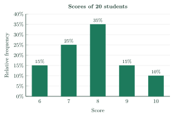
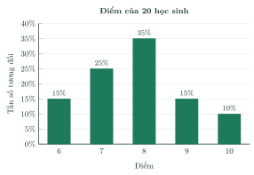
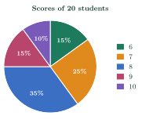
Why relative frequency?Vì sao dùng tần số tương đối?
To compare two samples of different sizes, compare proportions (relative frequencies), not frequencies.
Muốn so sánh hai mẫu có cỡ mẫu khác nhau, ta so sánh tỉ lệ (tần số tương đối), không so sánh tần số.
6Worked ExamplesVí dụ có lời giải
ExampleVí dụ 1RememberingNhận biết – One relative frequencyTính một tần số tương đối
The frequency table shows the number of siblings of 20 students. Find the relative frequencies of the values 1 and 3.
Bảng tần số sau cho biết số anh chị em ruột của 20 học sinh. Tìm tần số tương đối của các giá trị 1 và 3.
| Number of siblings (x)Số anh chị em ruột (x) | 0 | 1 | 2 | 3 |
|---|---|---|---|---|
| Frequency (m)Tần số (m) | 4 | 10 | 4 | 2 |
Analysis: Use \(f=\dfrac{m}{n}\cdot100\%\) with \(n=20\).
Phân tích: Dùng \(f=\dfrac{m}{n}\cdot100\%\) với \(n=20\).
Value 1: \(f=\dfrac{10}{20}\cdot100\%=50\%\).
Giá trị 1: \(f=\dfrac{10}{20}\cdot100\%=50\%\).
Value 3: \(f=\dfrac{2}{20}\cdot100\%=10\%\).
Giá trị 3: \(f=\dfrac{2}{20}\cdot100\%=10\%\).
50% and 10%.
50% và 10%.
ExampleVí dụ 2UnderstandingThông hiểu – Favorite sportsMôn thể thao yêu thích
In a survey, 40 students chose their favorite sport. Make the relative frequency table.
Trong một cuộc khảo sát, 40 học sinh chọn môn thể thao yêu thích. Lập bảng tần số tương đối.
| SportMôn thể thao | FootballBóng đá | BadmintonCầu lông | SwimmingBơi lội | ChessCờ vua |
|---|---|---|---|---|
| Frequency (m)Tần số (m) | 14 | 10 | 9 | 7 |
Analysis: Divide each frequency by 40, then multiply by 100%.
Phân tích: Chia mỗi tần số cho 40 rồi nhân với 100%.
\(\dfrac{14}{40}\cdot100\%=35\%\); \(\dfrac{10}{40}\cdot100\%=25\%\); \(\dfrac{9}{40}\cdot100\%=22.5\%\); \(\dfrac{7}{40}\cdot100\%=17.5\%\).
\(\dfrac{14}{40}\cdot100\%=35\%\); \(\dfrac{10}{40}\cdot100\%=25\%\); \(\dfrac{9}{40}\cdot100\%=22{,}5\%\); \(\dfrac{7}{40}\cdot100\%=17{,}5\%\).
The relative frequency table:
Bảng tần số tương đối:
SportMôn thể thao FootballBóng đá BadmintonCầu lông SwimmingBơi lội ChessCờ vua Relative frequency (f)Tần số tương đối (f) \(35\%\)\(35\%\) \(25\%\)\(25\%\) \(22.5\%\)\(22{,}5\%\) \(17.5\%\)\(17{,}5\%\) Check: \(35+25+22.5+17.5=100\).
Kiểm tra: \(35+25+22{,}5+17{,}5=100\).
35%, 25%, 22.5%, 17.5%.
35%, 25%, 22,5%, 17,5%.
ExampleVí dụ 3Basic applicationVận dụng thấp – A relative frequency bar chartBiểu đồ cột tần số tương đối
Draw the relative frequency bar chart for the table in Example 2. Which sport is chosen by about a quarter of the students?
Vẽ biểu đồ tần số tương đối dạng cột cho bảng ở Ví dụ 2. Môn thể thao nào được khoảng một phần tư số học sinh chọn?
Analysis: The heights of the bars are 35, 25, 22.5 and 17.5 (%).
Phân tích: Chiều cao các cột là 35; 25; 22,5 và 17,5 (%).
Sports on the horizontal axis, percentages on the vertical axis:
Các môn thể thao trên trục ngang, tỉ số phần trăm trên trục đứng:
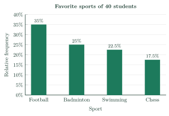
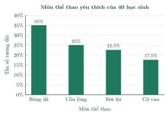
A quarter is 25%: badminton.
Một phần tư là 25%: cầu lông.
Badminton.
Cầu lông.
ExampleVí dụ 4Basic applicationVận dụng thấp – A pie chartBiểu đồ hình quạt tròn
Find the central angles and draw the pie chart for the table in Example 2.
Tính góc ở tâm của các hình quạt rồi vẽ biểu đồ hình quạt tròn cho bảng ở Ví dụ 2.
Analysis: Central angle \(=f\cdot360^\circ\).
Phân tích: Góc ở tâm \(=f\cdot360^\circ\).
Football: \(35\%\cdot360^\circ=126^\circ\); badminton: \(25\%\cdot360^\circ=90^\circ\); swimming: \(22.5\%\cdot360^\circ=81^\circ\); chess: \(17.5\%\cdot360^\circ=63^\circ\). Check: \(126+90+81+63=360\).
Bóng đá: \(35\%\cdot360^\circ=126^\circ\); cầu lông: \(25\%\cdot360^\circ=90^\circ\); bơi lội: \(22{,}5\%\cdot360^\circ=81^\circ\); cờ vua: \(17{,}5\%\cdot360^\circ=63^\circ\). Kiểm tra: \(126+90+81+63=360\).
Draw a circle and the four sectors with these angles; write the percentage on each sector:
Vẽ hình tròn và bốn hình quạt có các góc ở tâm trên; ghi tỉ số phần trăm trên mỗi hình quạt:
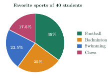
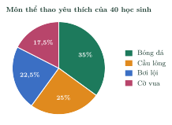
126°, 90°, 81°, 63°.
126°, 90°, 81°, 63°.
ExampleVí dụ 5ApplicationVận dụng – Comparing two classesSo sánh hai lớp
Class 9A has 40 students and 14 of them like football best. Class 9B has 32 students and 12 of them like football best. Lan says: “More students like football in 9A, so football is more popular in 9A.” Is she right?
Lớp 9A có 40 học sinh, trong đó 14 em thích bóng đá nhất. Lớp 9B có 32 học sinh, trong đó 12 em thích bóng đá nhất. Lan nói: “Lớp 9A có nhiều bạn thích bóng đá hơn nên bóng đá được ưa thích ở lớp 9A hơn.” Lan nói đúng không?
Analysis: The class sizes are different, so compare relative frequencies.
Phân tích: Hai lớp có sĩ số khác nhau nên phải so sánh tần số tương đối.
9A: \(f=\dfrac{14}{40}\cdot100\%=35\%\); 9B: \(f=\dfrac{12}{32}\cdot100\%=37.5\%\).
9A: \(f=\dfrac{14}{40}\cdot100\%=35\%\); 9B: \(f=\dfrac{12}{32}\cdot100\%=37{,}5\%\).
\(37.5\%\gt35\%\): the proportion of students who like football is higher in 9B, by \(2.5\) percentage points. Lan is not right: 14 > 12 only because 9A is bigger.
\(37{,}5\%\gt35\%\): tỉ lệ học sinh thích bóng đá ở lớp 9B cao hơn, hơn \(2{,}5\) điểm phần trăm. Lan nói chưa đúng: 14 > 12 chỉ vì lớp 9A đông hơn.
No; football is more popular in 9B (37.5% > 35%).
Không; bóng đá được ưa thích ở lớp 9B hơn (37,5% > 35%).
7PracticeBài tập luyện tập
A. Multiple ChoiceA. Trắc nghiệm nhiều lựa chọn
| Number of children (x) | 0 | 1 | 2 | 3 |
|---|---|---|---|---|
| Frequency (m) | 3 | 8 | 2 | 7 |
| Số con (x) | 0 | 1 | 2 | 3 |
|---|---|---|---|---|
| Tần số (m) | 3 | 8 | 2 | 7 |
Answer: b. \(f=\dfrac{7}{20}\cdot100\%=35\%\).
Đáp án b. \(f=\dfrac{7}{20}\cdot100\%=35\%\).
In a survey of 300 students, the relative frequency of the answer “basketball” is 30%. How many students gave this answer?
Khảo sát 300 học sinh, tần số tương đối của câu trả lời “bóng rổ” là 30%. Có bao nhiêu học sinh chọn câu trả lời này?
Answer: c. \(m=300\cdot30\%=90\).
Đáp án c. \(m=300\cdot30\%=90\).
The pie chart shows the relative frequencies of the favorite sports of 50 students. How many students chose “basketball”?
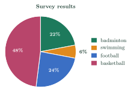
Biểu đồ hình quạt tròn cho biết tần số tương đối của môn thể thao yêu thích của 50 học sinh. Có bao nhiêu học sinh chọn “bóng rổ”?
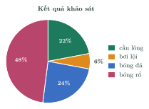
Answer: b. \(m=50\cdot48\%=24\).
Đáp án b. \(m=50\cdot48\%=24\).
B. True or FalseB. Đúng hoặc sai
| Score (x) | 7 | 8 | 9 | 10 |
|---|---|---|---|---|
| Relative frequency (f) | 35% | 10% | 40% | ? |
| Điểm (x) | 7 | 8 | 9 | 10 |
|---|---|---|---|---|
| Tần số tương đối (f) | 35% | 10% | 40% | ? |
True. The relative frequencies add up to \(100\%\): missing \(=15\%\).
Đúng. Tổng các tần số tương đối bằng \(100\%\): còn thiếu \(15\%\).
In a pie chart, the sector of a value with relative frequency \(25\%\) has a central angle of \(25^\circ\).
Trong biểu đồ hình quạt tròn, hình quạt ứng với giá trị có tần số tương đối \(25\%\) có góc ở tâm bằng \(25^\circ\).
False. \(25\%\cdot360^\circ=90^\circ\).
Sai. \(25\%\cdot360^\circ=90^\circ\).
C. Short AnswerC. Trả lời ngắn
| Goals (x) | 0 | 1 | 2 | 3 |
|---|---|---|---|---|
| Relative frequency (f) | ? | 36% | 28% | 20% |
| Số bàn thắng (x) | 0 | 1 | 2 | 3 |
|---|---|---|---|---|
| Tần số tương đối (f) | ? | 36% | 28% | 20% |
Enter a number (e.g. 12.5).
Nhập một số (ví dụ 12,5).
Answer: 16. \(100-(36+28+20)=16\).
Đáp số: 16. \(100-(36+28+20)=16\).
The bar chart shows the relative frequencies of the shoe sizes of 20 students. For how many students is the shoe size equal to 40?
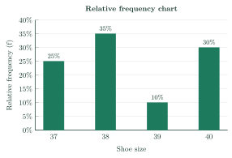
Biểu đồ cột cho biết tần số tương đối của cỡ giày của 20 học sinh. Có bao nhiêu học sinh có cỡ giày bằng 40?
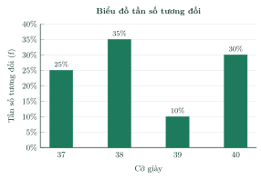
Enter a number.
Nhập một số.
Answer: 6. \(m=20\cdot30\%=6\).
Đáp số: 6. \(m=20\cdot30\%=6\).
D1. Self-practice – RememberingD1. Tự luyện – Mức Nhận biết
If the relative frequency \(f_i\) (in %) and the sample size \(n\) are known, then the frequency is…
Nếu biết tần số tương đối \(f_i\) (tính theo %) và cỡ mẫu \(n\) thì tần số là…
Answer: d. From \(f_i=\dfrac{m_i}{n}\cdot100\) we get \(m_i=\dfrac{f_i\cdot n}{100}\).
Đáp án d. Từ \(f_i=\dfrac{m_i}{n}\cdot100\) suy ra \(m_i=\dfrac{f_i\cdot n}{100}\).
In a pie chart, the whole circle represents…
Trong biểu đồ hình quạt tròn, cả hình tròn biểu diễn…
Answer: d. The whole circle is 100%.
Đáp án d. Cả hình tròn ứng với 100%.
| Books read (x) | 0 | 1 | 2 | 3 | 4 | 5 |
|---|---|---|---|---|---|---|
| Relative frequency (f) | 8% | 32% | 16% | 12% | 20% | 12% |
| Số sách đã đọc (x) | 0 | 1 | 2 | 3 | 4 | 5 |
|---|---|---|---|---|---|---|
| Tần số tương đối (f) | 8% | 32% | 16% | 12% | 20% | 12% |
Answer: d. Read the table: 4.
Đáp án d. Đọc bảng: 4.
D2. Self-practice – UnderstandingD2. Tự luyện – Mức Thông hiểu
| Shoe size (x) | 37 | 38 | 39 | 40 |
|---|---|---|---|---|
| Frequency (m) | 7 | 3 | 6 | 4 |
| Cỡ giày (x) | 37 | 38 | 39 | 40 |
|---|---|---|---|---|
| Tần số (m) | 7 | 3 | 6 | 4 |
Answer: a. \(f_i=\dfrac{m_i}{20}\cdot100\%\).
Đáp án a. \(f_i=\dfrac{m_i}{20}\cdot100\%\).
In a survey of 120 students, 60 chose “badminton”. In the pie chart of the results, what is the central angle of the sector for “badminton”?
Khảo sát 120 học sinh, có 60 em chọn “cầu lông”. Trong biểu đồ hình quạt tròn biểu diễn kết quả, góc ở tâm của hình quạt ứng với “cầu lông” bằng bao nhiêu?
Answer: a. \(\dfrac{60}{120}\cdot360^\circ=180^\circ\).
Đáp án a. \(\dfrac{60}{120}\cdot360^\circ=180^\circ\).
The data are the test scores of 20 students: 10, 8, 10, 8, 8, 7, 8, 10, 9, 7, 8, 10, 8, 7, 10, 8, 10, 9, 7, 7. What is the relative frequency of the value 9?
Dữ liệu là điểm bài kiểm tra của 20 học sinh: 10, 8, 10, 8, 8, 7, 8, 10, 9, 7, 8, 10, 8, 7, 10, 8, 10, 9, 7, 7. Tần số tương đối của giá trị 9 là bao nhiêu?
Answer: b. \(m=2\), \(f=\dfrac{2}{20}\cdot100\%=10\%\).
Đáp án b. \(m=2\), \(f=\dfrac{2}{20}\cdot100\%=10\%\).
D3. Self-practice – Basic applicationD3. Tự luyện – Mức Vận dụng thấp
The bar chart shows the relative frequencies of the number of books read last month by 25 students. By how many percentage points does the greatest relative frequency exceed the least one?
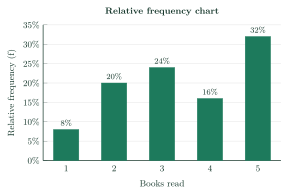
Biểu đồ cột cho biết tần số tương đối của số quyển sách đã đọc trong tháng trước của 25 học sinh. Tần số tương đối lớn nhất hơn tần số tương đối nhỏ nhất bao nhiêu điểm phần trăm?
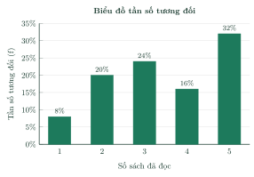
Answer: c. \(32\%-8\%=24\%\).
Đáp án c. \(32\%-8\%=24\%\).
The pie chart shows the results of a survey about the favorite fruits of students. Exactly 9 students chose “apple”. How many students took part in the survey?
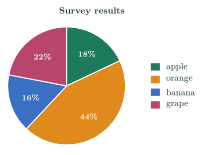
Biểu đồ hình quạt tròn cho biết kết quả khảo sát về loại quả yêu thích của học sinh. Có đúng 9 học sinh chọn “táo”. Hỏi có bao nhiêu học sinh tham gia khảo sát?
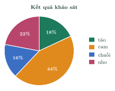
Answer: d. \(n=\dfrac{9\cdot100}{18}=50\).
Đáp án d. \(n=\dfrac{9\cdot100}{18}=50\).
In a sample, the value \(a\) has frequency 5 and relative frequency \(12.5\%\). What is the sample size?
Trong một mẫu dữ liệu, giá trị \(a\) có tần số 5 và tần số tương đối \(12{,}5\%\). Cỡ mẫu là bao nhiêu?
Answer: d. \(n=\dfrac{5\cdot100}{12.5}=40\).
Đáp án d. \(n=\dfrac{5\cdot100}{12{,}5}=40\).
D4. Self-practice – Advanced applicationD4. Tự luyện – Mức Vận dụng
Class 9A has 40 students, 30 of whom read books every day. Class 9B has 25 students, 20 of whom read books every day. In which class is the proportion of students who read every day higher?
Lớp 9A có 40 học sinh, trong đó 30 em đọc sách mỗi ngày. Lớp 9B có 25 học sinh, trong đó 20 em đọc sách mỗi ngày. Lớp nào có tỉ lệ học sinh đọc sách mỗi ngày cao hơn?
Answer: b. 9A: \(\dfrac{30}{40}\cdot100\%=75\%\); 9B: \(\dfrac{20}{25}\cdot100\%=80\%\). Compare relative frequencies, not frequencies.
Đáp án b. 9A: \(\dfrac{30}{40}\cdot100\%=75\%\); 9B: \(\dfrac{20}{25}\cdot100\%=80\%\). Cần so sánh tần số tương đối, không so sánh tần số.
In a survey about how students travel to school last year, 43 of 200 students chose “e-bike”. This year, 24 of 50 students chose it. By how many percentage points did the relative frequency of “e-bike” increase?
Năm ngoái, trong cuộc khảo sát về phương tiện đến trường của học sinh, có 43 trong số 200 học sinh chọn “xe đạp điện”. Năm nay, có 24 trong số 50 học sinh chọn “xe đạp điện”. Tần số tương đối của “xe đạp điện” đã tăng bao nhiêu điểm phần trăm?
Answer: b. \(21.5\%\to48\%\): the difference is \(26.5\%\).
Đáp án b. \(21{,}5\%\to48\%\): chênh lệch \(26{,}5\%\).
A student spends a day of 24 hours as follows: sleep 9 h, school 6 h, homework 3 h, sport 2 h, other 4 h. In a pie chart of this day, what is the central angle of the sector for “other”?
Một học sinh sử dụng 24 giờ trong ngày như sau: ngủ 9 giờ, học ở trường 6 giờ, tự học 3 giờ, thể thao 2 giờ, việc khác 4 giờ. Trong biểu đồ hình quạt tròn biểu diễn ngày này, góc ở tâm của hình quạt “việc khác” bằng bao nhiêu?
Answer: c. \(\dfrac{4}{24}\cdot360^\circ=60^\circ\).
Đáp án c. \(\dfrac{4}{24}\cdot360^\circ=60^\circ\).
A. Multiple ChoiceA. Trắc nghiệm nhiều lựa chọn
| Score (x) | 5 | 6 | 7 | 8 | 9 | 10 |
|---|---|---|---|---|---|---|
| Frequency (m) | 2 | 8 | 2 | 1 | 2 | 5 |
| Điểm (x) | 5 | 6 | 7 | 8 | 9 | 10 |
|---|---|---|---|---|---|---|
| Tần số (m) | 2 | 8 | 2 | 1 | 2 | 5 |
Answer: c. \(f=\dfrac{2}{20}\cdot100\%=10\%\).
Đáp án c. \(f=\dfrac{2}{20}\cdot100\%=10\%\).
In a survey of 200 students, the relative frequency of the answer “basketball” is 16%. How many students gave this answer?
Khảo sát 200 học sinh, tần số tương đối của câu trả lời “bóng rổ” là 16%. Có bao nhiêu học sinh chọn câu trả lời này?
Answer: d. \(m=200\cdot16\%=32\).
Đáp án d. \(m=200\cdot16\%=32\).
The pie chart shows the relative frequencies of the favorite sports of 40 students. How many students chose “chess”?
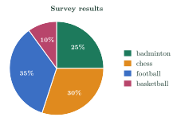
Biểu đồ hình quạt tròn cho biết tần số tương đối của môn thể thao yêu thích của 40 học sinh. Có bao nhiêu học sinh chọn “cờ vua”?
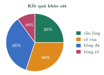
Answer: a. \(m=40\cdot30\%=12\).
Đáp án a. \(m=40\cdot30\%=12\).
B. True or FalseB. Đúng hoặc sai
| Goals (x) | 0 | 1 | 2 | 3 | 4 | 5 |
|---|---|---|---|---|---|---|
| Relative frequency (f) | 24% | 20% | 12% | 32% | 4% | ? |
| Số bàn thắng (x) | 0 | 1 | 2 | 3 | 4 | 5 |
|---|---|---|---|---|---|---|
| Tần số tương đối (f) | 24% | 20% | 12% | 32% | 4% | ? |
True. The relative frequencies add up to \(100\%\): missing \(=8\%\).
Đúng. Tổng các tần số tương đối bằng \(100\%\): còn thiếu \(8\%\).
In a pie chart, the sector of a value with relative frequency \(40\%\) has a central angle of \(144^\circ\).
Trong biểu đồ hình quạt tròn, hình quạt ứng với giá trị có tần số tương đối \(40\%\) có góc ở tâm bằng \(144^\circ\).
True. \(40\%\cdot360^\circ=144^\circ\).
Đúng. \(40\%\cdot360^\circ=144^\circ\).
C. Short AnswerC. Trả lời ngắn
| Shoe size (x) | 36 | 37 | 38 | 39 | 40 |
|---|---|---|---|---|---|
| Relative frequency (f) | 36% | 28% | ? | 20% | 4% |
| Cỡ giày (x) | 36 | 37 | 38 | 39 | 40 |
|---|---|---|---|---|---|
| Tần số tương đối (f) | 36% | 28% | ? | 20% | 4% |
Enter a number (e.g. 12.5).
Nhập một số (ví dụ 12,5).
Answer: 12. \(100-(36+28+20+4)=12\).
Đáp số: 12. \(100-(36+28+20+4)=12\).
The bar chart shows the relative frequencies of the test scores of 25 students. For how many students is the score equal to 8?
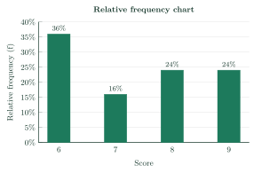
Biểu đồ cột cho biết tần số tương đối của điểm bài kiểm tra của 25 học sinh. Có bao nhiêu học sinh có điểm bằng 8?
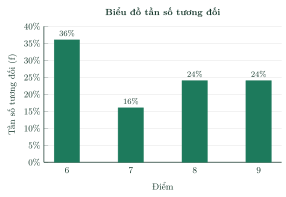
Enter a number.
Nhập một số.
Answer: 6. \(m=25\cdot24\%=6\).
Đáp số: 6. \(m=25\cdot24\%=6\).
D1. Self-practice – RememberingD1. Tự luyện – Mức Nhận biết
A value \(x_i\) has frequency \(m_i\) in a sample of size \(n\). Its relative frequency is…
Giá trị \(x_i\) có tần số \(m_i\) trong mẫu có cỡ \(n\). Tần số tương đối của \(x_i\) là…
Answer: a. \(f_i=\dfrac{m_i}{n}\cdot100\%\).
Đáp án a. \(f_i=\dfrac{m_i}{n}\cdot100\%\).
In a pie chart, the sector of a value with relative frequency \(f_i\) has central angle…
Trong biểu đồ hình quạt tròn, hình quạt ứng với giá trị có tần số tương đối \(f_i\) có góc ở tâm bằng…
Answer: c. Angle \(=f_i\cdot360^\circ\).
Đáp án c. Góc ở tâm \(=f_i\cdot360^\circ\).
| Goals (x) | 1 | 2 | 3 | 4 | 5 |
|---|---|---|---|---|---|
| Relative frequency (f) | 24% | 16% | 12% | 28% | 20% |
| Số bàn thắng (x) | 1 | 2 | 3 | 4 | 5 |
|---|---|---|---|---|---|
| Tần số tương đối (f) | 24% | 16% | 12% | 28% | 20% |
Answer: c. Read the table: 1.
Đáp án c. Đọc bảng: 1.
D2. Self-practice – UnderstandingD2. Tự luyện – Mức Thông hiểu
| Hours of sleep (x) | 7 | 8 | 9 | 10 |
|---|---|---|---|---|
| Frequency (m) | 2 | 8 | 3 | 7 |
| Số giờ ngủ (x) | 7 | 8 | 9 | 10 |
|---|---|---|---|---|
| Tần số (m) | 2 | 8 | 3 | 7 |
Answer: b. \(f_i=\dfrac{m_i}{20}\cdot100\%\).
Đáp án b. \(f_i=\dfrac{m_i}{20}\cdot100\%\).
In a survey of 30 students, 10 chose “mango”. In the pie chart of the results, what is the central angle of the sector for “mango”?
Khảo sát 30 học sinh, có 10 em chọn “xoài”. Trong biểu đồ hình quạt tròn biểu diễn kết quả, góc ở tâm của hình quạt ứng với “xoài” bằng bao nhiêu?
Answer: a. \(\dfrac{10}{30}\cdot360^\circ=120^\circ\).
Đáp án a. \(\dfrac{10}{30}\cdot360^\circ=120^\circ\).
The data are the number of children in 20 families: 1, 1, 2, 1, 1, 4, 0, 1, 2, 1, 3, 4, 0, 0, 1, 2, 2, 3, 0, 4. What is the relative frequency of the value 4?
Dữ liệu là số con của 20 gia đình: 1, 1, 2, 1, 1, 4, 0, 1, 2, 1, 3, 4, 0, 0, 1, 2, 2, 3, 0, 4. Tần số tương đối của giá trị 4 là bao nhiêu?
Answer: d. \(m=3\), \(f=\dfrac{3}{20}\cdot100\%=15\%\).
Đáp án d. \(m=3\), \(f=\dfrac{3}{20}\cdot100\%=15\%\).
D3. Self-practice – Basic applicationD3. Tự luyện – Mức Vận dụng thấp
The bar chart shows the relative frequencies of the number of children in 20 families. By how many percentage points does the greatest relative frequency exceed the least one?
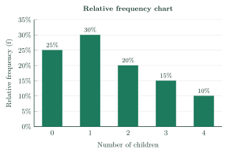
Biểu đồ cột cho biết tần số tương đối của số con của 20 gia đình. Tần số tương đối lớn nhất hơn tần số tương đối nhỏ nhất bao nhiêu điểm phần trăm?
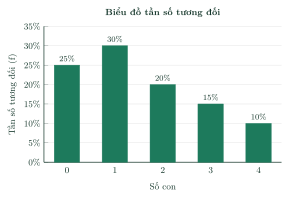
Answer: a. \(30\%-10\%=20\%\).
Đáp án a. \(30\%-10\%=20\%\).
The pie chart shows the results of a survey about how students travel to school. Exactly 8 students chose “motorbike”. How many students took part in the survey?
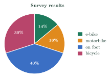
Biểu đồ hình quạt tròn cho biết kết quả khảo sát về phương tiện đến trường của học sinh. Có đúng 8 học sinh chọn “xe máy”. Hỏi có bao nhiêu học sinh tham gia khảo sát?
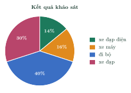
Answer: a. \(n=\dfrac{8\cdot100}{16}=50\).
Đáp án a. \(n=\dfrac{8\cdot100}{16}=50\).
In a sample, the value \(a\) has frequency 50 and relative frequency \(25\%\). What is the sample size?
Trong một mẫu dữ liệu, giá trị \(a\) có tần số 50 và tần số tương đối \(25\%\). Cỡ mẫu là bao nhiêu?
Answer: c. \(n=\dfrac{50\cdot100}{25}=200\).
Đáp án c. \(n=\dfrac{50\cdot100}{25}=200\).
D4. Self-practice – Advanced applicationD4. Tự luyện – Mức Vận dụng
Class 9A has 40 students, 25 of whom read books every day. Class 9B has 20 students, 15 of whom read books every day. In which class is the proportion of students who read every day higher?
Lớp 9A có 40 học sinh, trong đó 25 em đọc sách mỗi ngày. Lớp 9B có 20 học sinh, trong đó 15 em đọc sách mỗi ngày. Lớp nào có tỉ lệ học sinh đọc sách mỗi ngày cao hơn?
Answer: a. 9A: \(\dfrac{25}{40}\cdot100\%=62.5\%\); 9B: \(\dfrac{15}{20}\cdot100\%=75\%\). Compare relative frequencies, not frequencies.
Đáp án a. 9A: \(\dfrac{25}{40}\cdot100\%=62{,}5\%\); 9B: \(\dfrac{15}{20}\cdot100\%=75\%\). Cần so sánh tần số tương đối, không so sánh tần số.
In a survey about how students travel to school last year, 8 of 40 students chose “on foot”. This year, 9 of 50 students chose it. By how many percentage points did the relative frequency of “on foot” decrease?
Năm ngoái, trong cuộc khảo sát về phương tiện đến trường của học sinh, có 8 trong số 40 học sinh chọn “đi bộ”. Năm nay, có 9 trong số 50 học sinh chọn “đi bộ”. Tần số tương đối của “đi bộ” đã giảm bao nhiêu điểm phần trăm?
Answer: d. \(20\%\to18\%\): the difference is \(2\%\).
Đáp án d. \(20\%\to18\%\): chênh lệch \(2\%\).
A student spends a day of 24 hours as follows: sleep 9 h, school 6 h, homework 3 h, sport 2 h, other 4 h. In a pie chart of this day, what is the central angle of the sector for “homework”?
Một học sinh sử dụng 24 giờ trong ngày như sau: ngủ 9 giờ, học ở trường 6 giờ, tự học 3 giờ, thể thao 2 giờ, việc khác 4 giờ. Trong biểu đồ hình quạt tròn biểu diễn ngày này, góc ở tâm của hình quạt “tự học” bằng bao nhiêu?
Answer: c. \(\dfrac{3}{24}\cdot360^\circ=45^\circ\).
Đáp án c. \(\dfrac{3}{24}\cdot360^\circ=45^\circ\).
A. Multiple ChoiceA. Trắc nghiệm nhiều lựa chọn
| Number of children (x) | 0 | 1 | 2 | 3 | 4 |
|---|---|---|---|---|---|
| Frequency (m) | 1 | 9 | 5 | 5 | 5 |
| Số con (x) | 0 | 1 | 2 | 3 | 4 |
|---|---|---|---|---|---|
| Tần số (m) | 1 | 9 | 5 | 5 | 5 |
Answer: d. \(f=\dfrac{5}{25}\cdot100\%=20\%\).
Đáp án d. \(f=\dfrac{5}{25}\cdot100\%=20\%\).
In a survey of 40 students, the relative frequency of the answer “apple” is 25%. How many students gave this answer?
Khảo sát 40 học sinh, tần số tương đối của câu trả lời “táo” là 25%. Có bao nhiêu học sinh chọn câu trả lời này?
Answer: c. \(m=40\cdot25\%=10\).
Đáp án c. \(m=40\cdot25\%=10\).
The pie chart shows the relative frequencies of the favorite sports of 100 students. How many students chose “swimming”?
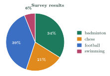
Biểu đồ hình quạt tròn cho biết tần số tương đối của môn thể thao yêu thích của 100 học sinh. Có bao nhiêu học sinh chọn “bơi lội”?
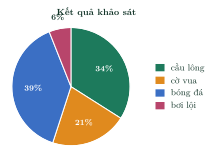
Answer: a. \(m=100\cdot6\%=6\).
Đáp án a. \(m=100\cdot6\%=6\).
B. True or FalseB. Đúng hoặc sai
| Goals (x) | 0 | 1 | 2 | 3 |
|---|---|---|---|---|
| Relative frequency (f) | 32% | ? | 16% | 24% |
| Số bàn thắng (x) | 0 | 1 | 2 | 3 |
|---|---|---|---|---|
| Tần số tương đối (f) | 32% | ? | 16% | 24% |
True. The relative frequencies add up to \(100\%\): missing \(=28\%\).
Đúng. Tổng các tần số tương đối bằng \(100\%\): còn thiếu \(28\%\).
In a pie chart, the sector of a value with relative frequency \(37.5\%\) has a central angle of \(135^\circ\).
Trong biểu đồ hình quạt tròn, hình quạt ứng với giá trị có tần số tương đối \(37{,}5\%\) có góc ở tâm bằng \(135^\circ\).
True. \(37.5\%\cdot360^\circ=135^\circ\).
Đúng. \(37{,}5\%\cdot360^\circ=135^\circ\).
C. Short AnswerC. Trả lời ngắn
| Books read (x) | 0 | 1 | 2 | 3 |
|---|---|---|---|---|
| Relative frequency (f) | ? | 32% | 12% | 20% |
| Số sách đã đọc (x) | 0 | 1 | 2 | 3 |
|---|---|---|---|---|
| Tần số tương đối (f) | ? | 32% | 12% | 20% |
Enter a number (e.g. 12.5).
Nhập một số (ví dụ 12,5).
Answer: 36. \(100-(32+12+20)=36\).
Đáp số: 36. \(100-(32+12+20)=36\).
The bar chart shows the relative frequencies of the shoe sizes of 20 students. For how many students is the shoe size equal to 38?
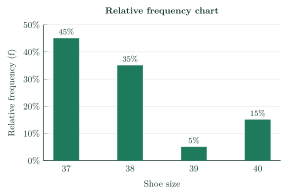
Biểu đồ cột cho biết tần số tương đối của cỡ giày của 20 học sinh. Có bao nhiêu học sinh có cỡ giày bằng 38?
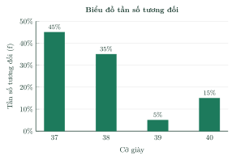
Enter a number.
Nhập một số.
Answer: 7. \(m=20\cdot35\%=7\).
Đáp số: 7. \(m=20\cdot35\%=7\).
D1. Self-practice – RememberingD1. Tự luyện – Mức Nhận biết
The relative frequency of a value tells us its frequency as…
Tần số tương đối của một giá trị cho biết tần số đó dưới dạng…
Answer: c. It is the ratio \(m_i:n\) written as a percentage.
Đáp án c. Đó là tỉ số \(m_i:n\) viết dưới dạng phần trăm.
The sum of all relative frequencies in a relative frequency table is…
Tổng các tần số tương đối trong bảng tần số tương đối bằng…
Answer: d. \(f_1+f_2+\dots+f_k=100\%\).
Đáp án d. \(f_1+f_2+\dots+f_k=100\%\).
| Shoe size (x) | 37 | 38 | 39 | 40 |
|---|---|---|---|---|
| Relative frequency (f) | 30% | 10% | 40% | 20% |
| Cỡ giày (x) | 37 | 38 | 39 | 40 |
|---|---|---|---|---|
| Tần số tương đối (f) | 30% | 10% | 40% | 20% |
Answer: c. Read the table: 39.
Đáp án c. Đọc bảng: 39.
D2. Self-practice – UnderstandingD2. Tự luyện – Mức Thông hiểu
| Number of children (x) | 0 | 1 | 2 | 3 |
|---|---|---|---|---|
| Frequency (m) | 7 | 9 | 7 | 2 |
| Số con (x) | 0 | 1 | 2 | 3 |
|---|---|---|---|---|
| Tần số (m) | 7 | 9 | 7 | 2 |
Answer: d. \(f_i=\dfrac{m_i}{25}\cdot100\%\).
Đáp án d. \(f_i=\dfrac{m_i}{25}\cdot100\%\).
In a survey of 24 students, 1 chose “motorbike”. In the pie chart of the results, what is the central angle of the sector for “motorbike”?
Khảo sát 24 học sinh, có 1 em chọn “xe máy”. Trong biểu đồ hình quạt tròn biểu diễn kết quả, góc ở tâm của hình quạt ứng với “xe máy” bằng bao nhiêu?
Answer: d. \(\dfrac{1}{24}\cdot360^\circ=15^\circ\).
Đáp án d. \(\dfrac{1}{24}\cdot360^\circ=15^\circ\).
The data are the number of goals scored in 20 football matches: 0, 3, 0, 1, 2, 0, 2, 2, 0, 0, 0, 0, 1, 2, 0, 2, 1, 1, 2, 0. What is the relative frequency of the value 1?
Dữ liệu là số bàn thắng trong 20 trận bóng đá: 0, 3, 0, 1, 2, 0, 2, 2, 0, 0, 0, 0, 1, 2, 0, 2, 1, 1, 2, 0. Tần số tương đối của giá trị 1 là bao nhiêu?
Answer: d. \(m=4\), \(f=\dfrac{4}{20}\cdot100\%=20\%\).
Đáp án d. \(m=4\), \(f=\dfrac{4}{20}\cdot100\%=20\%\).
D3. Self-practice – Basic applicationD3. Tự luyện – Mức Vận dụng thấp
The bar chart shows the relative frequencies of the hours of sleep of 20 students last night. By how many percentage points does the greatest relative frequency exceed the least one?
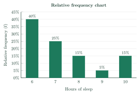
Biểu đồ cột cho biết tần số tương đối của số giờ ngủ đêm qua của 20 học sinh. Tần số tương đối lớn nhất hơn tần số tương đối nhỏ nhất bao nhiêu điểm phần trăm?
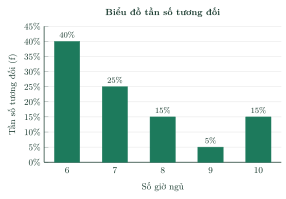
Answer: d. \(40\%-5\%=35\%\).
Đáp án d. \(40\%-5\%=35\%\).
The pie chart shows the results of a survey about how students travel to school. Exactly 31 students chose “e-bike”. How many students took part in the survey?
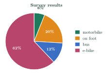
Biểu đồ hình quạt tròn cho biết kết quả khảo sát về phương tiện đến trường của học sinh. Có đúng 31 học sinh chọn “xe đạp điện”. Hỏi có bao nhiêu học sinh tham gia khảo sát?
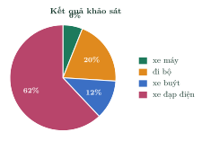
Answer: b. \(n=\dfrac{31\cdot100}{62}=50\).
Đáp án b. \(n=\dfrac{31\cdot100}{62}=50\).
In a sample, the value \(a\) has frequency 24 and relative frequency \(20\%\). What is the sample size?
Trong một mẫu dữ liệu, giá trị \(a\) có tần số 24 và tần số tương đối \(20\%\). Cỡ mẫu là bao nhiêu?
Answer: c. \(n=\dfrac{24\cdot100}{20}=120\).
Đáp án c. \(n=\dfrac{24\cdot100}{20}=120\).
D4. Self-practice – Advanced applicationD4. Tự luyện – Mức Vận dụng
Class 9A has 32 students, 12 of whom read books every day. Class 9B has 20 students, 9 of whom read books every day. In which class is the proportion of students who read every day higher?
Lớp 9A có 32 học sinh, trong đó 12 em đọc sách mỗi ngày. Lớp 9B có 20 học sinh, trong đó 9 em đọc sách mỗi ngày. Lớp nào có tỉ lệ học sinh đọc sách mỗi ngày cao hơn?
Answer: a. 9A: \(\dfrac{12}{32}\cdot100\%=37.5\%\); 9B: \(\dfrac{9}{20}\cdot100\%=45\%\). Compare relative frequencies, not frequencies.
Đáp án a. 9A: \(\dfrac{12}{32}\cdot100\%=37{,}5\%\); 9B: \(\dfrac{9}{20}\cdot100\%=45\%\). Cần so sánh tần số tương đối, không so sánh tần số.
In a survey about the favorite sports of students last year, 22 of 50 students chose “chess”. This year, 86 of 200 students chose it. By how many percentage points did the relative frequency of “chess” decrease?
Năm ngoái, trong cuộc khảo sát về môn thể thao yêu thích của học sinh, có 22 trong số 50 học sinh chọn “cờ vua”. Năm nay, có 86 trong số 200 học sinh chọn “cờ vua”. Tần số tương đối của “cờ vua” đã giảm bao nhiêu điểm phần trăm?
Answer: a. \(44\%\to43\%\): the difference is \(1\%\).
Đáp án a. \(44\%\to43\%\): chênh lệch \(1\%\).
A student spends a day of 24 hours as follows: sleep 9 h, school 6 h, homework 3 h, sport 2 h, other 4 h. In a pie chart of this day, what is the central angle of the sector for “sport”?
Một học sinh sử dụng 24 giờ trong ngày như sau: ngủ 9 giờ, học ở trường 6 giờ, tự học 3 giờ, thể thao 2 giờ, việc khác 4 giờ. Trong biểu đồ hình quạt tròn biểu diễn ngày này, góc ở tâm của hình quạt “thể thao” bằng bao nhiêu?
Answer: a. \(\dfrac{2}{24}\cdot360^\circ=30^\circ\).
Đáp án a. \(\dfrac{2}{24}\cdot360^\circ=30^\circ\).
8Common MistakesLỗi thường gặp
Dividing the wrong way. \(f=\dfrac{m}{n}\cdot100\%\), not \(\dfrac{n}{m}\).
Chia ngược. \(f=\dfrac{m}{n}\cdot100\%\), không phải \(\dfrac{n}{m}\).
Forgetting “×100%”. \(\dfrac{7}{20}=0.35=35\%\).
Quên nhân 100%. \(\dfrac{7}{20}=0{,}35=35\%\).
Wrong central angle. The angle is \(f\cdot360^\circ\), not \(f\) degrees.
Sai góc ở tâm. Góc ở tâm là \(f\cdot360^\circ\), không phải \(f\) độ.
Comparing frequencies of samples with different sizes. Compare relative frequencies.
So sánh tần số của hai mẫu khác cỡ. Phải so sánh tần số tương đối.
9Lesson SummaryTổng kết
Relative frequency: \(f_i=\dfrac{m_i}{n}\cdot100\%\); the relative frequencies add up to \(100\%\).
Tần số tương đối: \(f_i=\dfrac{m_i}{n}\cdot100\%\); tổng các tần số tương đối bằng \(100\%\).
Relative frequency charts: bar chart (height = \(f_i\)) and pie chart (central angle \(f_i\cdot360^\circ\)).
Biểu đồ tần số tương đối: dạng cột (chiều cao = \(f_i\)) và dạng hình quạt tròn (góc ở tâm \(f_i\cdot360^\circ\)).
Use relative frequencies to compare samples of different sizes.
Dùng tần số tương đối để so sánh các mẫu có cỡ mẫu khác nhau.
Key English: relative frequency, relative frequency table, relative frequency chart, pie chart, percentage point.
Thuật ngữ cần nhớ (chạm vào để xem tiếng Anh): tần số tương đối, bảng tần số tương đối, biểu đồ tần số tương đối, biểu đồ hình quạt tròn, điểm phần trăm.